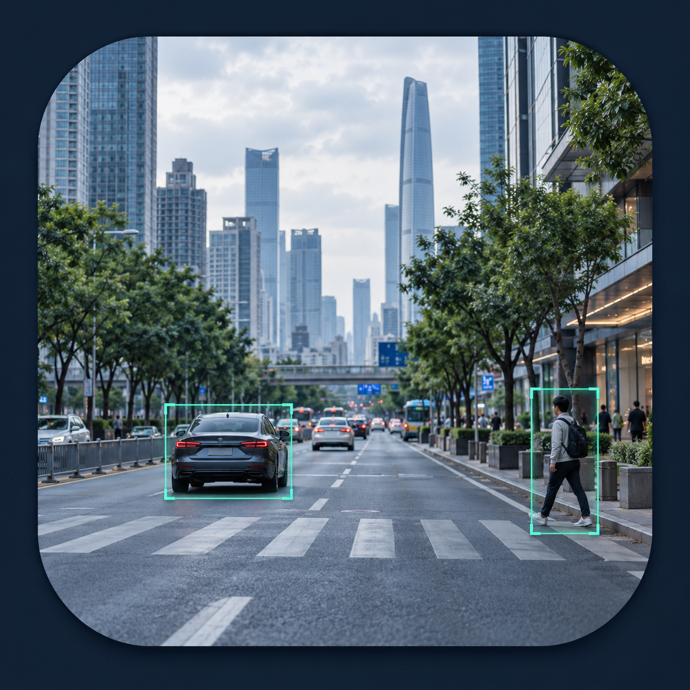

检测目标数 ↗
0 个
本次检测结果

先告诉我们怎么称呼你，再选择适合本次使用的工作方式。
为本次街景采集与检测建立独立档案。图片、采样点和检测结果都会保存到指定文件夹。
一次加入多张街景图片，按队列逐张运行所选模型，统一查看和导出结果。
从页面顶部选择采集方式，再按指引定位街区、生成采样点并预览街景。
拖动和缩放地图，然后使用右上角矩形工具框选；框选范围会自动填入采样设置。
查看目标类别构成、置信度分布与场景统计，结果根据当前图像实时更新。
上传街景图片并运行模型后，此处将根据识别到的目标类别、数量和置信度生成场景摘要。
把图像划分为九个区域，查看模型识别目标在画面中的位置分布。
汇总批量预标注结果，检查类别分布并导出可用于模型训练的 YOLO 数据集。
训练仅纳入已复核图片；街景样本按道路分组划分，单一道路数据会改为按图片划分。实际显存占用和训练速度取决于训练设备。
训练服务运行在本机 Python 环境。启动服务只会连接后端，不会自动训练；只有点击“开始训练”并再次确认后才会提交当前数据集。
本机训练日志将在这里显示。
查看本次使用中的检测记录，选择记录可恢复对应图片和标注。
查看模型来源、推理方式和可选检测模型。权重首次加载需要联网，之后由浏览器缓存。
选择使用标准 YOLOv8 检测头导出的 .onnx 模型，并按模型类别顺序输入标签。权重只在当前浏览器会话中载入。
按目录查看操作步骤、功能说明和常见问题
上传一张街景图片，运行模型并查看目标识别结果。
创建工程后，可按行政区或地图范围采集街景，批量检测并保存采集和分析记录。下面按工程工作流程说明各项功能，点击目录即可展开。
工程模式提供街景采集、批量检测、任务记录、数据洞察和训练数据等功能。采集需要启动本机街景服务；真实模型训练还需启动训练服务。系统不在工程模式中提供单图检测入口。
在采集区域左侧下拉菜单切换方式：“坐标点”可逐行输入纬度、经度和可选方向角；“经纬度范围”填写西、南、东、北边界；“地图框选”通过矩形工具取范围；“地点查询”可直接输入地名或描述区域。单次范围最多 20 km × 20 km，且面积不超过 400 km²。
列表里的“待确认/已确认”状态可筛选。队列和确认状态会自动保存在当前工程目录，重新打开工程后可以继续查看。
模型中心可查看和切换 YOLOS、DETR、YOLOv9 等内置检测模型，也支持导入符合系统输入与输出格式的 YOLOv8 Detect ONNX。导入时需配置类别名称和输入尺寸；结构或预处理不匹配的 ONNX 需要额外适配。
现在由“道路采样间距”决定点位，数量上限默认留空；如需减少数量，可填写上限。服务端单次最多生成 5000 个点。
普通底图道路只是地图瓦片。请先定位并放大到街区，点击“加载当前地图道路”；只有随后绘制出的道路线可以选择。
先勾选采样点，点击“预览所选街景”，并确认采集服务已连接。一次最多预览 25 张；如果附近没有可用全景，缩略图会显示失败原因。
上方结果区可用前后按钮逐张看图片，列表文件名也可跳转。接受模型结果时，点击“一键确认模型结果”即可一次确认全部已完成图片。
不会。它只把已完成图片标记为已确认，使其可用于训练数据导出；检测框保持模型结果不变。工程模式用于批量检测与统一确认。
行政区定位、地图和道路数据需要网络。请确认本机采集服务已连接、地图范围位于有道路数据的区域，并检查采样点周围 100 米内是否存在可用街景。
不会。训练包只是数据文件；要进行训练，需启动本机训练服务并在训练数据页面主动配置和启动任务。